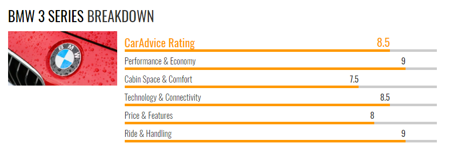
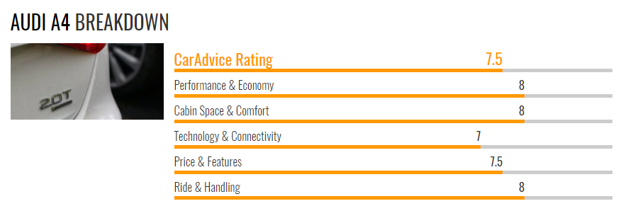
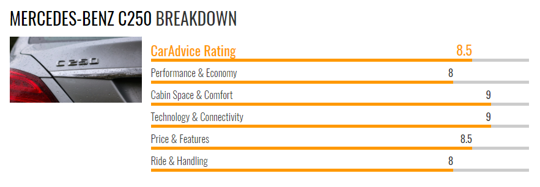

How does the 3-Series stack up against the competition?



The BMW 3 Series is responsible for defining more than the brand's "Ultimate Driving Machine" slogan, but the sport sedan segment it competes in. However, if you're searching for a premium car that blends luxurious comforts and technology with engaging performance that delights the senses, you may have noticed that the 3 Series is far from alone at the top of its class. With rivals like the new Audi A4 and Mercedes-Benz C-Class encroaching on its turf, the long-standing rivalry between the German luxury automakers has become more heated than ever! But for prospective drivers from Salinas and Santa Cruz, it might make the choice a bit more difficult.
But as the 3 Series, A4, and C-Class prove, even winning combinations of performance, technology, and luxury aren't created equal-especially when ones' taste and needs are concerned. Search for the latest competitive reviews from major automotive publications, and you may notice that no one can seem to agree which of these three sedans holds the crown. But as always, the devil is in the details, and if you're wondering which model represents the best value, here's how these three examples stack up.
BMW 3 Series | Audi A4 | Mercedes-Benz C-Class |
|
|
|
|
|
|
|
|
|
The easiest way to separate the 3 Series from the A4 and C-Class is by their identity. All three put their respective brand's approach to luxury and performance front and center, with different results. The 3 Series is the most driver-oriented of the three, prioritizing engaging driving dynamics with exceptional balance and a rear-wheel drive feel. The A4's mantle is far more tech-based, featuring digital gauges, semi-autonomous driving characteristics, and a ride that's quick and plush. The C-Class is the most artful, putting its build quality and exclusivity on equal footing with its sporting acceleration and handling.
From there, things begin to diverge. The A4, for example, is only offered in FWD or AWD, and sedan and "Allroad" wagon are the only available body styles, and no hybrid or diesel powertrain is available. The C-Class offers a plug-in hybrid in addition to coupe and convertible options. The 3 Class offers the most choice of powertrain and body styles, with five different engines including hybrid and diesel, three body styles, and more.
The 3 Series' 330i, A4's Quattro, and C-Class' C300 sedan are where these three models find even footing, as all three come with a 2.0-liter turbocharged inline-four with similar outputs. On the 330i, 248 hp/258 lb-ft of torque is on hand, where the A4's puts out 252 hp/273 lb-ft of torque. The C-Class brings up the rear with 241 hp and the same torque rating as the A4. For these models, the 3 Series and A4 are the most evenly matched in terms of acceleration, with the Mercedes-Benz a tenth of a second behind.
The most athletic ride, however, comes when each is equipped with an optional sport package, and in that, the 3 Series emerges as the clear winner-even without it! While its German competitors have made gains in the realm of steering feedback and chassis balance, the level of engagement found behind the wheel of any 3 Series handily trumps both A4 and C-Class. Additionally, the 340i's 320 horsepower and 330 lb-ft of torque can't be matched without purchasing a more-expensive S or AMG model.
The 3 Series has always been about the driver. So where the A4 and C-Class pack in digital gauges and potentially-distracting infotainment systems, the technology found on the 3 Series is designed to be useful without detracting from the Ultimate Driving Machine experience. But if you want a more technological edge, the 3 Series can still be had with a heads-up display, adaptive cruise control, and 360-degree camera, similar to those offered on its competitors. The 2018 model also comes with the lauded iDrive interface with easy-to-use, intuitive controls. Phone applications that keep you connected to your car, wireless charging, and in-car Wi-Fi are also offered in all three, but gadget-lovers may be swayed by the presentation of the A4's Virtual Cockpit display, or the sophisticated cabin of the C-Class.
The 3 Series' safety systems are optional, with the exception of a rear-view camera, auto-dimming mirrors, and impact sensors-but even a 320i can be equipped with must-haves like active blind spot warning and parking distance control. A fully-loaded 340i can be had with adaptive cruise control, a head-up display, speed limit information, and an active driving assistant. The C-Class offers more systems standard, and the A4 ranks even higher in value after making it's once-optional Driver Assistance suite standard for 2018.
As we mentioned before, making an informed decision between these three sedans can come down to your subjective tastes as well as your budget and needs. But if any of our Monterey or Watsonville, CA are worried about savings, taking a peek at our global incentives might hold the deal they need to make their sporting ambitions a reality!
When it comes to shopping for your next sport sedan, BMW of Monterey offers more than models with a competitive edge. We make getting you in the car you want-on your terms-our highest priority. If you're ready to get started, filling out our secure, online financing application will help us get the ball rolling on your loan or lease agreement in accordance with your budget. You can also contact the sales department at our BMW dealership in Seaside, CA to schedule your test drive.